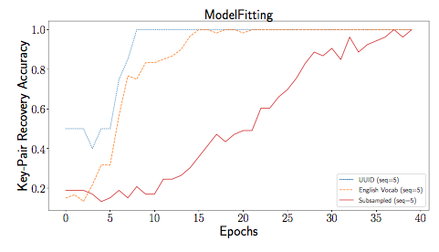

AAAI/ACM conference on Ethics and Safety (in submission), 2017
Ethical Challenges in Data-Driven Dialogue Systems
Adversarial samples from VHRED dialogue model trained on Reddit Movies. For each, top is the base context and response, and bottom is the adversarial sample.
Abstract
The use of dialogue systems as a medium for human-machine interaction is an increasingly prevalent paradigm. A growing number of dialogue systems use conversation strategies that are learned from large datasets. There are well documented instances where interactions with these system have resulted in biased or even offensive conversations due to the data-driven training process. Here, we highlight potential ethical issues that arise in dialogue systems research, including: implicit biases in data-driven systems, the rise of adversarial examples, potential sources of privacy violations, safety concerns, special considerations for reinforcement learning systems, and reproducibility concerns. We also suggest areas stemming from these issues that deserve further investigation. Through this initial survey, we hope to spur research leading to robust, safe, and ethically sound dialogue systems.
Materials
Citation
